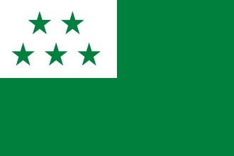
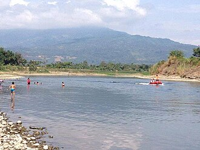
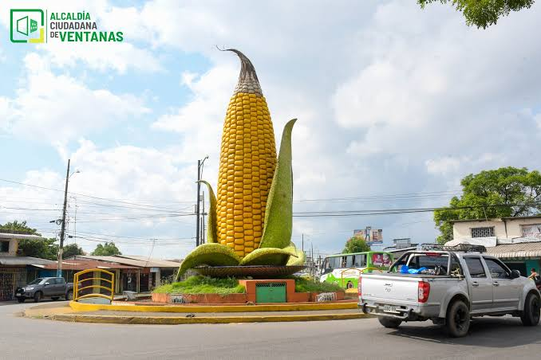
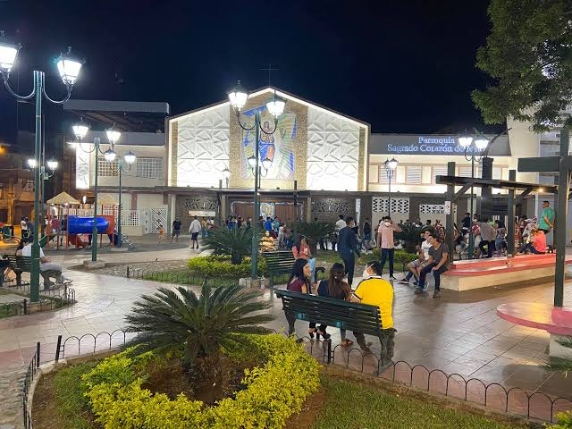
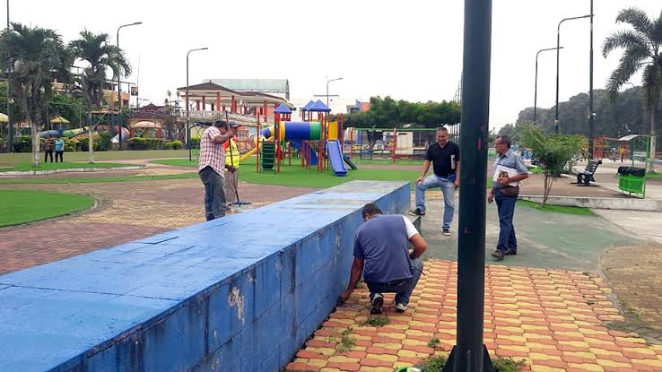
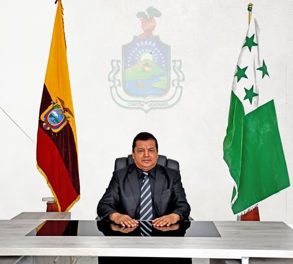
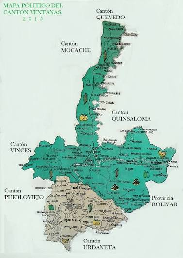

El cantón Ventanas está ubicado en la provincia de Los Ríos, Ecuador. Fue cantonizado el 10 de noviembre de 1952, después de haber sido parroquia rural del cantón Puebloviejo. Se caracteriza por su gran producción agrícola, especialmente de maíz, banano y cacao. Es conocido como la "Capital Maicera del Ecuador" debido a la importancia del cultivo de maíz en su economía. Además, se destaca por su actividad comercial, ganadera y por las tradiciones de la cultura montubia.

Chancho hornado.
Guatita.
Chicha de maíz.
Seco de pato.
Seco de gallina criolla.
Arroz con menestra y carne asada.
Humitas.
Hayacas.
Bollo.
Caldo de salchicha.
Mazamorra.
Cazuela de pescado.
Sopa de mariscos.
Tortas de choclo.
Encebollado.
Son atractivas por sus caídas de agua, sus rocas y la vegetación que las rodea. Son ideales para disfrutar de la naturaleza y realizar caminatas.

Durante el verano se forma una playa de agua dulce donde las familias pueden bañarse, descansar y disfrutar del paisaje.

Representa la identidad agrícola de Ventanas y rinde homenaje a su reconocimiento como la Capital Maicera del Ecuador.

Es un espacio para pasear y compartir en familia. Cuenta con juegos infantiles, pista atlética y un estanque con peces.

Es visitado por sus áreas recreativas, pista de skate, juegos infantiles y espacios para realizar actividad física.


El actual alcalde del cantón Ventanas es el abogado Carlos Agapito Carriel Abad, quien está a cargo de dirigir la administración municipal y promover obras y proyectos para el desarrollo y bienestar de sus habitantes.
Según el Censo de Población y Vivienda de 2022 del INEC, el cantón Ventanas cuenta con 73.211 habitantes, distribuidos entre sus parroquias urbanas y rurales.

Volver al índice principal